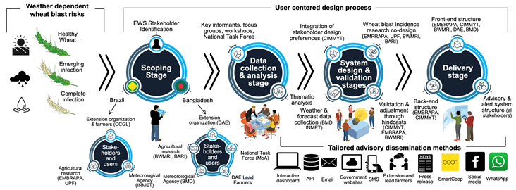
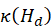
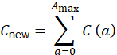
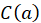
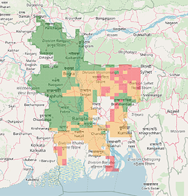
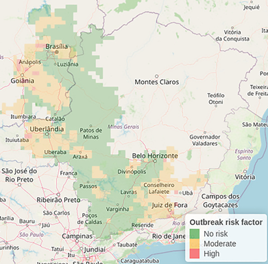

Why do we need an Early Warning System for Wheat Blast Disease?
Wheat blast poses a serious threat to wheat production in both South America and South Asia, where weather patterns play a key role in driving infections that can lead to rapid and devastating yield losses (Montes et al. 2022; Pequeno et al. 2024). To address this issue, a climate-based advisory tool-an Early Warning System (EWS) driven by weather forecasts-has been implemented in two countries that have experienced unanticipated outbreaks. In Brazil, the disease has persisted for years, with repeated flare-ups leading to notable declines in wheat output (Fernandes et al. 2017). In contrast, Bangladesh reported its first outbreak in 2016, marking the pathogen’s debut beyond South America; the disease quickly spread across more than 15,000 hectares in less than a month, triggering food security alarms throughout the region (Malaker et al. 2016; Montes et al. 2022). Since then, both nations have worked alongside meteorological agencies, agricultural researchers, extension networks, and farming communities to co-develop and circulate weather-informed disease advisories. Although the EWS was initially tailored for Brazil and Bangladesh, the underlying framework is adaptable and could support similar agricultural climate services in other vulnerable areas.
What are the agricultural and wheat production contexts in Bangladesh and Brazil?
Although rice remains the dominant staple in Bangladesh, wheat consumption is projected to increase by 6%, reaching 8.4 million metric tons, driven by rising demand from households, bakeries, and the food service sector (USDA 2022). The country experiences heavy rainfall during the summer, while precipitation is minimal in the winter months. Winter conditions are humid, with average nighttime temperatures ranging between 11°C and 16°C (Wheat Atlas, 2022). Wheat is generally planted following the harvest of monsoon-season rice, typically during late autumn-from November to December-on soils that drain well (Krupnik et al. 2015a; Krupnik et al. 2024). The most difficult environments for wheat cultivation are located in southern Bangladesh, the region where wheat blast was first detected in the country (Malaker et al. 2016). In this area, high temperatures and plant diseases significantly limit crop yields (Krupnik et al. 2015b; Schulthess et al. 2019).
Brazil’s wheat production has been increasing (FAOSTAT 2023), supported in part by government initiatives aimed at enhancing both domestic self-reliance and export potential. The country consumes around 12.8 million tons of wheat annually, with approximately half of that amount sourced through imports (Torres et al. 2022). Cultivation occurs primarily in three key zones: the temperate southern region, the subtropical central-west, and the tropical Cerrado plateau situated at an elevation of 800 meters. The Cerrado features a tropical savannah climate, distinguished by alternating dry and wet seasons. The dry period, lasting from May to September, is characterized by average temperatures of 30°C and limited rainfall, while the rainy season, from October to April, brings cooler conditions and increased precipitation. In this region, rainfed wheat is commonly planted between late February and mid-March. Wheat blast is endemic to this area and continues to trigger frequent and sometimes severe disease outbreaks (Torres et al. 2022).
How was the early warning system developed?
We implemented a user-centered co-design (UCD) process methodology was employed to create an EWS that aligns the priorities of meteorological institutions, agricultural extension agencies, and farmer organizations, while incorporating model validation and practical deployment as a climate-informed agricultural service (Figure 1). Drawing on the five generalized UCD development stages described by Wallach and Scholz (2012), we applied this framework to the collaborative design of the weather-forecast-based wheat blast EWS, as detailed in the following sections and results.
(1) Scoping: Conducted during 2016–2017, this initial phase involved identifying key stakeholders in Brazil and Bangladesh, including representatives from agricultural research institutes, extension services, meteorological agencies, and farmer organizations. These groups were brought together to collaboratively define the goals and priorities of the Early Warning System (EWS).
(2) Data Collection and Analysis: Between 2017 and 2019, we gathered unstructured qualitative data through key informant interviews, focus group discussions, and multi-stakeholder workshops-such as meetings of the National Wheat Blast Task Force in Bangladesh-drawing from the stakeholder groups outlined in Section 3.1. Detailed notes were taken during all engagements. Thematic analysis, as proposed by Braun and Clarke (2006), was applied to extract patterns from the data, classify user attributes, and inform the operational and interface design of the EWS and its advisory components.
(3) System Design: Spanning 2019–2020, this phase involved both server-side (back-end) and user-interface (front-end) development. The back-end component integrated weather forecasts, disease occurrence data, and model outputs provided by collaborating institutions to enable model validation and real-time advisory generation. Meanwhile, the front-end was developed to meet user preferences, featuring an interactive dashboard and an automated system for delivering location-specific advisories via an application programming interface (API).
(4) Validation: As Wallach and Scholz (2012) note, system design and validation are often interdependent and iterative. From 2019 to 2021, we validated both the back-end and front-end elements of the EWS using hindcasting techniques for weather and disease data. Feedback from stakeholder presentations on model performance and dashboard functionality was used to refine system components through multiple design-validation cycles.
(5) Delivery: Between 2022 and 2023, the focus shifted to operationalization and outreach. We collaborated with agricultural research and extension institutions to produce visual outbreak risk maps and establish written protocols for farmer advisories. Extension personnel were trained to use the EWS, interpret its outputs, and deliver timely alerts to end-users. Usability evaluations-typically associated with the validation stage in UCD-were incorporated into training activities, ensuring that real-world use continued to shape improvements in both system architecture and user interface design.
|
 |
|
Figure 1. Weather-driven wheat blast risk assessment and the user-centered software design process followed in Bangladesh and Brazil for the development of the numerical forecast-based early warning system. |
How does the wheat blast simulation model work?
The predictive model underlying the wheat blast EWS consists of four integrated components: (1) an index assessing conditions favorable for sporulation, (2) a model estimating spore cloud density, (3) site-specific numerical weather forecasts, and (4) a system for distributing disease alerts.
The weather data-driven disease spore cloud density model
When inoculum levels are high, infection risk is generally regarded as the key constraint to epidemic development, with most bioclimatic disease models estimating infection potential based on the duration of leaf wetness and ambient temperature (Magarey et al. 2005). In contrast, wheat blast epidemics are predominantly influenced by the accumulation of inoculum and the spread of airborne conidia (Fernandes et al. 2021). To simulate how weather affects inoculum build-up for wheat blast, we utilized a parameterized version of a generic disease life cycle model (GDM) tailored to this pathosystem (Fernandes et al. 2019). The model assumes a uniform spatial distribution of inoculum and the presence of alternative host species near wheat-growing areas. Its climatic and biological assumptions are further detailed by Pequeno et al. (2024), where parameter coefficients are provided.
The GDM operates as a mechanistic model that replicates the seasonal development of wheat blast by calculating the daily production of spores in lesions from successive cohorts of infected tissue within a field. It relies on hourly weather inputs-specifically temperature, relative humidity, and rainfall-to simulate how environmental conditions drive disease processes (Fernandes et al. 2019). Initialization of the model requires hourly meteorological data along with biological coefficients, which together define the environmental parameters and pathogen dynamics. Additionally, the input files specify key simulation parameters, such as the starting date, the sowing date of the wheat crop, and the initial state of the crop canopy object-representing the amount of host tissue available for infection (Figure 2). This configuration allows the model to continuously track disease development across the host surface by integrating biological mechanisms with climatic variables.
|
Figure 2. A schematic illustrating the main elements of the Generic Disease Model (GDM) introduced in this study. Circled numbers refer to the corresponding summary equations discussed throughout the paper. |
The Generic Disease Model (GDM) predicts the progression of wheat blast by analyzing weather inputs to identify when environmental conditions surpass critical thresholds conducive to fungal development. These thresholds, including cardinal temperatures, are specified in the associated disease coefficient. The model's temperature suitability function, found in the utility module, is accessible to various components as needed throughout the simulation process.
To estimate total inoculum presence, the model calculates the formation and concentration of spore clouds within a cubic meter of airspace directly above the crop canopy-represented by the spore cloud density variable (σ)-which reflects the area most likely to harbor viable spores capable of initiating infection (Mousanejad et al. 2009). This metric is obtained by summing inputs from three distinct sources: the crop organ-cloud (individual infected plant parts), the plant-cloud (whole plants), and the crop field-cloud (broader field-level inoculum). The cumulative inoculum is then deposited onto the model’s crop canopy object, symbolizing the plant surface area available for infection. When environmental conditions align with infection thresholds, the model simulates the formation of new lesions, as illustrated in Equation 1,
|
(1) |
where denotes the spore cloud density, represents the proportion of host tissue that remains healthy, and refers to the infection efficiency of the wheat blast pathogen. The model’s temperature favorability function, is applied to the daily mean temperature, while the wetness favorability function, , is evaluated based on the duration of daily leaf wetness. Here signifies the total daily wetness duration and is the threshold value representing the minimum wetness duration required for infection to occur.
After lesions are initiated, the model tracks their progression over time by applying logistic growth curves specified in the pest disease coefficients. These curves govern how individual lesions grow and allow the model to estimate the total host tissue affected, differentiating between the invisible (asymptomatic) and visible (symptomatic) phases of infection, as shown in Figure 2. Each lesion advances through clearly defined epidemiological stages: a latent phase, where the lesion exists but does not yet produce spores; an infectious phase, characterized by active spore production and dispersal; and finally, a necrotic phase, in which the tissue dies and spore release ceases.
This stage-based simulation offers a mechanistic framework for modeling disease progression by linking the physiological behavior of individual lesions to the overall epidemic development within the plant canopy. Spore production is restricted to the infectious stage and is modeled on the surface of each lesion cohort. The quantity of spores generated depends on several factors, including lesion age, ambient temperature, relative humidity, and the maximum allowable spore density per square centimeter of lesion area. The number of newly produced spores—referred to as New Spores in Figure 2—is determined using a function that incorporates these environmental and physiological variables. This approach captures the complex, non-linear interactions between environmental conditions and lesion characteristics that influence spore generation. Equation 2 describes this formulation, incorporating a logical condition (sporeCondition) that must be satisfied for spore production to take place:
|
(2) |
where stands for the proportion of healthy tissue in the organ, IP is a boolean indicating whether the current day falls within the infection window, W represents daily leaf wetness duration, and Wth is the threshold wetness value required for spore release.
Provided that the sporeCondition (defined in Equation 2) is satisfied, the daily number of newly generated spores, denoted newSpores, is given by Equation 3,
|
(3) |
where L refers to the number of lesions in the
cohort, s is the number of spores produced per lesion per day, and represents the value of a trapezoidal
function dependent on the age of the cohort, calculated using the predefined
CohortAgeSet and the number of days since infection began. 
Spores generated daily from all lesion cohorts are added to the model’s spore cloud compartment, which represents the reservoir of viable inoculum available for initiating new infections. This compartment is updated each day to reflect the cumulative spore load, incorporating inputs from ongoing spore production and subtracting losses caused by factors such as rainfall-induced wash-off, exposure to solar radiation, and natural decline in spore viability over time as lesions age.
Light rainfall events (less than 5 mm per day) can facilitate wheat blast infection; however, precipitation can also physically remove conidia from lesions and wash recently deposited spores off plant surfaces (Kim et al., 1990; Kim, 1994). To account for this, the model simulates rainfall-induced spore loss from the spore cloud using Equation 4,
|
(4) |
where R represents daily rainfall in millimeters. In addition to rain effects, the model considers the impact of ultraviolet (UV) radiation on the persistence of airborne spores. Because direct UV data are often unavailable, the daily temperature range (DTR)—calculated as the difference between daily maximum and minimum temperatures—is used as an indirect indicator of cloud cover. A high DTR signals clear skies and intense UV radiation, which accelerates spore degradation. Conversely, when DTR falls below a specified threshold (e.g., < 9°C), suggesting overcast conditions and reduced UV exposure, the model extends spore viability by one day to reflect diminished UV-related mortality (Li et al., 2018; Makowski et al., 2019; Pequeno et al., 2024; Lagomarsino Oneto et al., 2020).
In contrast to rain and UV-related losses, spore removal from the spore cloud is also regulated by an age-dependent decay mechanism. As spores get older, their viability diminishes, and the model systematically purges aged spores to preserve a realistic representation of the inoculum pool. This helps prevent inflated estimates of infection risk by excluding spores that are no longer biologically effective. Age-based removal is implemented using either a first-in-first-out (FIFO) approach or decay functions. Spores are only considered viable up to a defined maximum age, , after which they are eliminated according to Equation 5,
|
 |
(5) |
Here,
represents the total number of viable spores per cubic meter of air above the
crop canopy after accounting for age-based decay, 
To evaluate infection risk to wheat spikes, the model compares airborne spore concentrations above the canopy with predefined thresholds for temperature, humidity, rainfall, and UV radiation. When these thresholds are exceeded, wheat spikes are flagged as susceptible to infection. By maintaining a dynamic, time-sensitive representation of the spore cloud, the model enhances the realism of secondary infection dynamics and effectively links localized lesion processes to broader disease progression within polycyclic epidemics.
What are the sources of weather data we use to drive the model?
The EWS employs a non-relational database to store both real-time weather data from an automated station network and five-day gridded forecasts. These forecasts are generated using the Weather Research and Forecasting (WRF) Model (Version 4.4.2, Boulder, USA), with inputs from the Bangladesh Meteorological Department (BMD; 17 km × 17 km resolution) and IBM Weather Company in Brazil (10 km × 10 km resolution). The system overlays this meteorological data onto mapped wheat-growing regions in both countries to simulate the density of wheat blast spores above crop canopies and to forecast disease progression. Forecasted spore densities are computed for a five-day horizon and are evaluated against a predefined threshold (see Section 2.4.3). Through an API, the system assigns color-coded risk levels to grid cells and issues alerts, accompanied by management recommendations, to agricultural extension services and farmer organizations in areas identified as medium or high risk.
How do the early warning systems work? How are alerts of outbreak risks triggered?
|
 |
|
 |
|
Figure 3. Example output maps from the disease early warning system, displayed on the web-based dashboard for Bangladesh (left) and Brazil’s Cerrados region (right). Grid cells are color-coded to reflect daily wheat blast risk levels: green indicates no risk, orange denotes moderate risk, and red signals high risk, as defined in Section 2.4.3. Blank areas on the maps correspond to regions with minimal or no wheat production. |
||
Although researchers and extension agencies in both countries emphasized the importance of an interactive web-based dashboard, their preferred communication channels for disseminating advisories varied. In Brazil, CCGL favored using the SmartCoop app (https://app.smart.coop.br/) as the primary platform for delivering wheat blast risk information, supported by SMS messages, WhatsApp groups for cooperative members, and broader outreach through press releases and social media (Figure 1). In contrast, Bangladesh’s Department of Agricultural Extension (DAE) relied on bi-weekly agro-meteorological bulletins and issued structured email and SMS alerts to extension personnel and lead farmers during periods of elevated outbreak risk (Table 1). Additionally, DAE provided training to extension agents on how to access and interpret the EWS dashboard.
|
Table 1. Structure of email and SMS advisories issued by the Wheat Blast Early Warning System in Bangladesh. Messages are tailored to the wheat crop’s risk level and growth stage, and are sent exclusively to registered users in areas where moderate to high risk is forecast during the heading, flowering, or ripening phases. |
|||||
|
Forecast risk level |
Phenological stages and their corresponding potential date ranges |
||||
|
9 Jan - 18 Feb Heading stage |
19 Jan - 28 Feb Flowering stage |
29 Jan - 10 March Ripening stage |
23 Feb - 4 April Maturity stage |
||
|
No risk |
No disease outbreak risk is identified, and no advisory is issued |
|||
|
Moderate risk |
Current weather conditions are conducive to wheat blast disease infection. If the crop is approaching or at the heading stage, it is advisable to consult with DAE, BWMRI, or CIMMYT and consider applying fungicide within the next few days to prevent infection. Ensure that fungicides are applied using proper health and safety equipment, following all necessary precautions. |
Current weather conditions are conducive to wheat blast disease infection. If the crop is at the heading or flowering stage, it is recommended to consult with DAE, BWMRI, or CIMMYT and consider applying fungicide in the next few days to prevent infection. Always apply fungicides using the appropriate health and safety equipment, ensuring all necessary precautions are followed. |
Current weather conditions are conducive to wheat blast disease infection. If wheat is at the flowering stage, it is advisable to consult with DAE, BWMRI, or CIMMYT and consider applying fungicide in the coming days to prevent infection. Ensure that fungicides are applied with the proper health and safety equipment, adhering to all necessary precautions. |
No disease outbreak risk is identified, and no advisory is issued |
|
|
High risk |
Current weather conditions are conducive for wheat blast disease infection. If the wheat is approaching or at the heading stage, it is advisable to consult with DAE, BWMRI, or CIMMYT and apply fungicide immediately to mitigate the risk of disease outbreak. Ensure that fungicides are applied with the appropriate health and safety equipment, following all necessary precautions. |
Current weather conditions are conducive to wheat blast disease infection. If wheat is at the heading or flowering stage, it is advisable to consult with DAE, BWMRI, or CIMMYT and apply fungicide immediately to prevent a potential disease outbreak. Fungicides should be applied only with the proper health and safety equipment, ensuring all necessary precautions are taken. |
Current weather conditions are conducive for wheat blast disease infection. If wheat is at the flowering or ripening stage, it is recommended to consult with DAE, BWMRI, or CIMMYT and apply fungicide immediately to reduce the risk of a disease outbreak. Fungicides should be applied only with the appropriate health and safety equipment, adhering to all necessary precautions. |
As the wheat crop is likely to be mostly mature, the risk of a disease outbreak is minimal. Therefore, no advisory is issued or emailed. |
|
References
Braun, V., & Clarke, V. 2006. Using thematic analysis in psychology. Qualitative Researchin Psychology, 3, 7–101. https://doi.org/10.1191/1478088706qp063oa
FAOSTAT. 2023. FAO Statistics. FAOSTAT. https://www.fao.org/faostat/en/#home (accessed 23 April 2023).
Fernandes, J.M., del Ponte, E.M., Ascari, J.P., Krupnik, T.J., Pavan, W., Vargas, F., Berton, T. 2021. Towards an early warning system for wheat blast: epidemiological basis and model development (R. Oliver, Ed.; pp. 623–642). Burleigh Dodds Science Publishing Ltd. https://doi.org/10.19103/AS.2021.0092.32
Fernandes, J.M., Pavan, W., Pequeno, D., Wiest, R., Holbig, C.A., Oliveira, F., Hoogenboom, G. 2019. Improving crop pest/disease modeling (pp. 127–148). https://doi.org/10.19103/AS.2019.0061.07
Fernandes, J.M.C., Nicolau, M., Pavan, W., Hölbig, C.A., Karrei, M., de Vargas, F., Bavaresco, J.L.B., Lazzaretti, A.T. and Tsukahara, R.Y. 2017. A weather-based model for predicting early season inoculum build-up and spike infection by the wheat blast pathogen. Tropical Plant Pathology, 42(3), 230–237. https://doi.org/10.1007/s40858-017-0164-2
Kim, C. K. 1994. In Zeigler, R. S., Leong, S. A., & Teng, P. S. Eds., Rice blast disease, pp. 451–464. CAB International.
Kim, K.C., Min, S.H., Yoshino, R. 1990. Epidemiological Studies of Rice Blast Disease Caused by Pyricularia oryzae Cavara (III) Diurnal Pattern of Conidial Release and Dispersal Under the Natural Conditions. Ann. Phytopath. Soc. Japan 56: 315-321.
Krupnik, T.J., Ahmed, Z.U., Timsina, J., Shahjahan, Md., Kurishi, A.S.M.A., Rahman, S. Miah, A.A., Gathala, M.K., McDonald, A.J. 2015a. Forgoing the fallow in Bangladesh’s stress-prone coastal deltaic environments: Effect of sowing date, nitrogen, and genotype on wheat yield in farmers’ fields. Field Crops Research. 170: 1–7. https://doi.org/10.1016/j.fcr.2014.09.019
Krupnik, T.J., Ahmed, Z.U., Timsina, J., Yasmin, S., Hossain, F., Mamun, A., McDonald, A.J. 2015b. Untangling crop management and environmental influences on wheat yield variability in Bangladesh: An application non-parametric approaches. Agricultural Systems. 139: 166–179. https://doi.org/10.1016/j.agsy.2015.05.007
Krupnik, T.J., Harun-Or-Rashid, M., Pandit, D., Islam, R., Hossain, M.K., Fernandes, J.M.C., Roy, K.K., Kabir, M.R., Stuerz, S., Singh, P.K., Faruq, G. (2024) Mix and manage: Cultivar mixtures can maintain yield under high wheat blast disease pressure. Crop Protection. 184: 106831.
Lagomarsino Oneto, D., Golan, J., Mazzino, A., Pringle, A., Seminara, A. 2020. Timing of fungal spore release dictates survival during atmospheric transport. Proceedings of the National Academy of Sciences, 117(10), 5134–5143. https://doi.org/10.1073/pnas.1913752117
Li, X., He, Y., Xie, C., Zu, Y., Zhan, F., Mei, X., Xia, Y., Li, Y. 2018. Effects of UV-B radiation on the infectivity of Magnaporthe oryzae and rice disease-resistant physiology in Yuanyang terraces. Photochemical & Photobiological Sciences. https://doi.org/10.1039/C7PP00139H
Magarey, R.D., Sutton, T.B., Thayer, C.L. 2005. A simple generic infection model for foliar fungal plant pathogens. Phytopathology 95(1):92-100. https://doi.org/10.1094/phyto-95-0092
Makowski, K., Wild, M., Ohmura, A. 2009. Diurnal temperature range over Europe between 1950 and 2005. Atmospheric Chemistry and Physics, 9(6), 2061–2076
Makowski, K., Wild, M., Ohmura, A. 2009. Diurnal temperature range over Europe between 1950 and 2005. Atmospheric Chemistry and Physics, 9(6), 2061–2076
Malaker, P.K., Barma, N.C.D., Tiwari, T.P., Collis, W.J., Duveiller, E., Singh, P.K., Joshi, A.K., Singh, R.P., Braun, H.J., Peterson, G.L, Pedley, K.F., Farman, M.L., Valent, B. 2016. First report of wheat blast caused by Magnaporthe oryzae pathotype Triticum in Bangladesh. Plant Disease 100(11): 2330-2330. https://doi.org/10.1094/PDIS-05-16-0666-PDN
Montes, C., Hussain, S.G., Krupnik, T.J. 2022. Variable climate suitability for wheat blast (Magnaporthe oryzae pathotype Triticum) in Asia: results from a continental-scale modeling approach. International Journal of Biometeorology. https://doi.org/10.1007/s00484-022-02352-9
Pequeno, D.N.L., Ferreira, T.B., Fernandes, J.M.C., Singh, P.K., Pavan, W., Sonder, K., Robertson, R., Krupnik, T.J., Erenstein, O., Asseng, S. 2024. Wheat blast disease impact on global grain yield under climate change. Nature Climate Change. 14, 178–183. https://doi.org/10.21203/rs.3.rs-1954134/v1
Schulthess, U. Ahmed, Z.U., Aravindakshan, S., Morshed, R.K., Kurishi, A.S.M.A., Krupnik, T.J. 2019. Farming on the fringe: Shallow groundwater dynamics and irrigation scheduling for maize and wheat in Bangladesh’s coastal delta. In press: Field Crops Research. 239: 135-148. https://doi.org/10.1016/j.fcr.2019.04.007
Torres, G.A.M., Ferreira, J.R., Binneck, E., Maciel, J.L.N., & Consoli, L. 2022. Blast disease and wheat production in Brazil. Pesquisa Agropecuária Brasileira, 57. https://doi.org/10.1590/s1678-3921.pab2022.v57.02487
USDA Foreign Agricultural Service. 2022. Bangladesh: Grain and Feed Update. https://www.fas.usda.gov/data/bangladesh-grain-and-feed-update-22 (accessed April 30, 2022).
Wallach, D., Scholz, S.C. 2012. User-Centered Design: Why and How to Put Users First in Software Development. In: Maedche, A., Botzenhardt, A., Neer, L. (eds) Software for People. Management for Professionals. Springer, Berlin, Heidelberg. https://doi.org/10.1007/978-3-642-31371-4_2
Wheat Atlas. 2022. Global distribution of wheat mega environments. International Maize and Wheat Improvement Center (CIMMYT), El Batan (Mexico). http://wheatatlas.org/megaenvironments (accessed 24 Oct 2022).